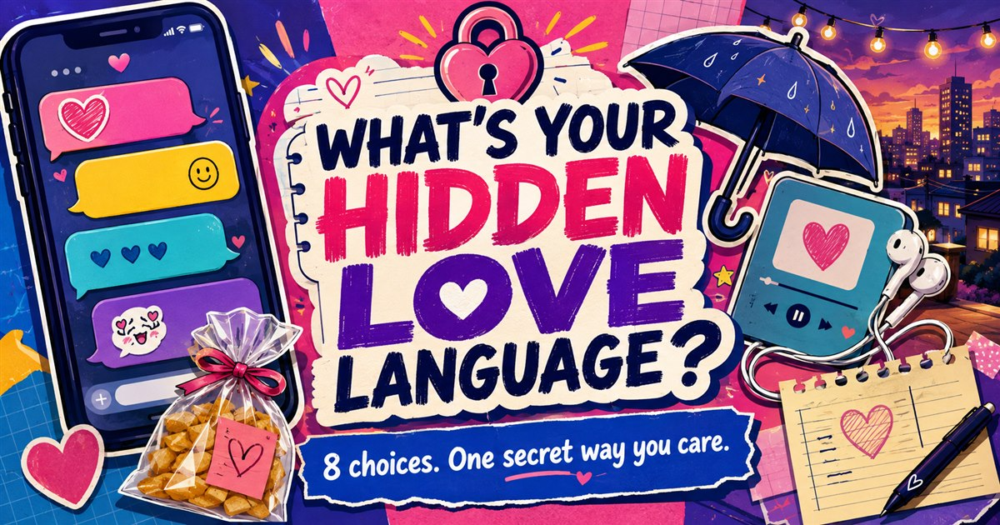

SECRET SIGNALS, REVEALED
What's Your Hidden Love Language?
You say “I care” without saying it.
Choose fast through eight kilig, chat, and date moments. We’ll expose the secret signal people notice first.
FOLLOW YOUR FIRST INSTINCT
YOUR HIDDEN LOVE LANGUAGE IS
This is a playful entertainment result based on your choices—not a psychological or relationship assessment. The percentage is not live population data.

A playful Filipino love-language quiz
Care can hide in a mabilis na reply, a favorite snack, a shared playlist, playful lambing, or the classic “message me when you’re home.” Small habits often say more than a dramatic speech.
This lighthearted quiz turns familiar Filipino kilig and caring moments into eight fun, shareable styles. It is made for entertainment and barkada comparison, not for psychological advice or judging a relationship.